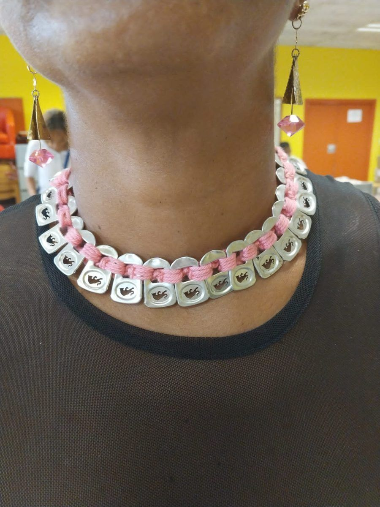

Ivy Grace is dedicated to crafting unique handmade jewellery and handbags from recycled materials. Our creations are designed for those who appreciate artistry and sustainability in equal measure.
Founded in the heart of Cape Town, Ivy Grace began with a vision to transform discarded items into beautiful, wearable art. Each piece is a testament to our commitment to quality and creativity.
We believe in the power of transformation and the beauty of the unexpected. Our mission is to provide our customers with products that are not only eco-friendly but also a reflection of individual style and elegance.
Explore our exclusive range of jewellery and handbags, each piece crafted with care from recycled materials.

This piece is made from red bull tabs, crocheted with 100% pure cotton. It comes in different colours, offering versatility and style.
This bag is made from soda tabs and acrylic yarn. Over 700 tabs were meticulously woven to create this stunning piece.
We'd love to hear from you — reach out to us anytime.